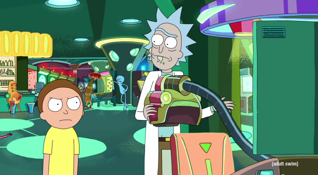
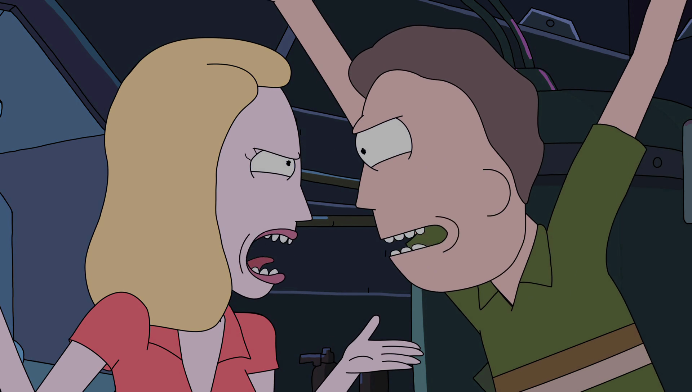
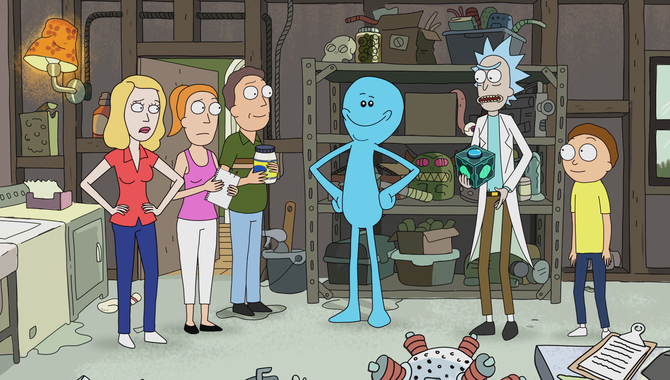
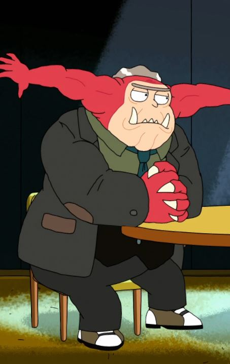
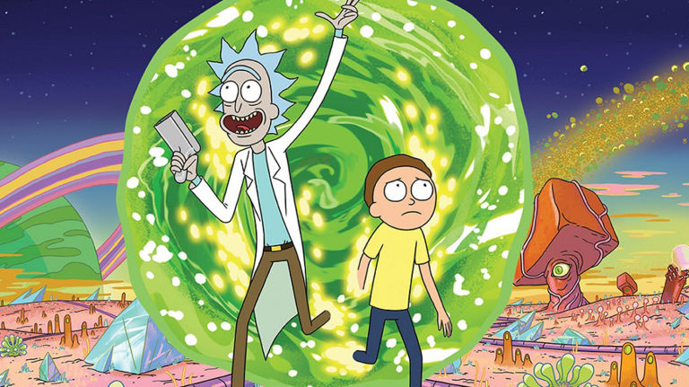
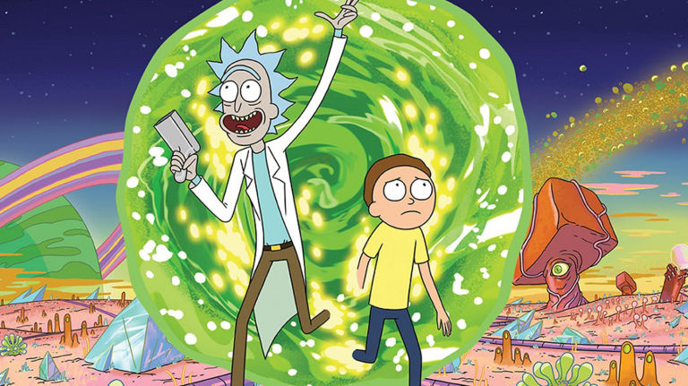
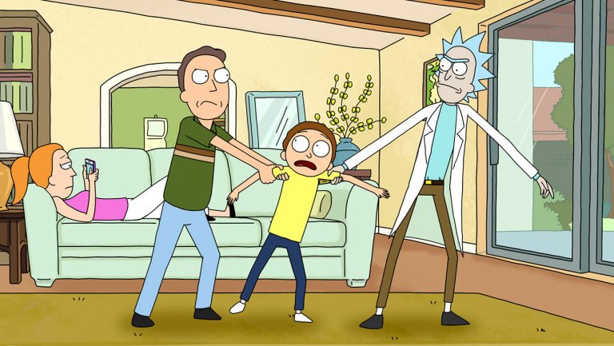
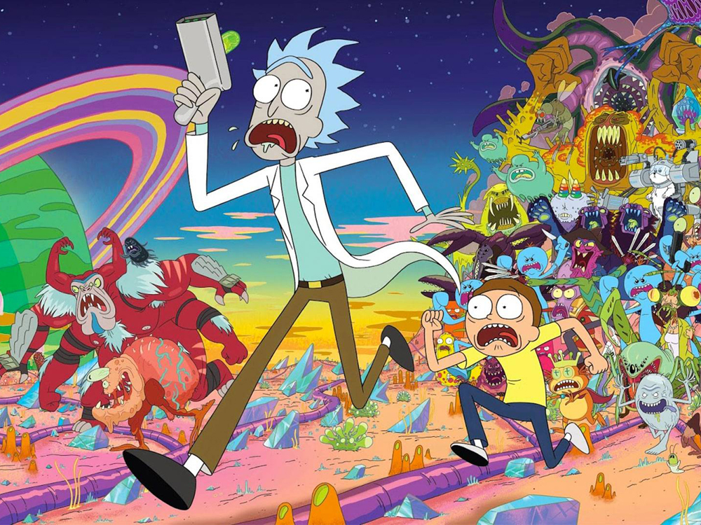
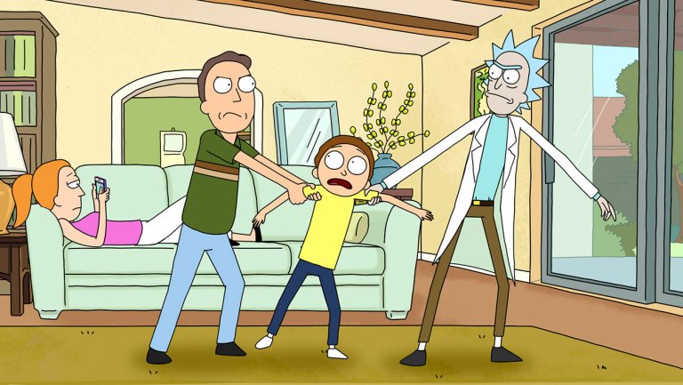
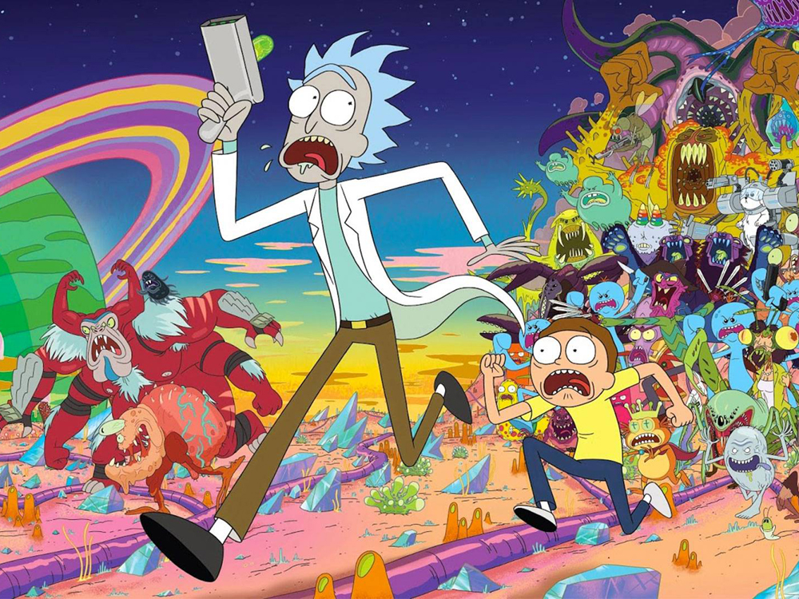

 

 



What was Rick's favorite exhibit in Anatomy Park?
What is Jerry's favorite movie?
What does Snuffles want to be called now that he abandoned his slave name?
Who is the voice actor for Rick Sanchez?
What does Rick claim is a weapon to scare off villagers during the purge?
What is the name of the book Morty Jr. writes?
What game does Morty play at Blips and Chitz?
What animal does Rick use for Morty's love potion?
What do the guards in the embassy call Pickle Rick?
What musical did the Sanchez family see in the false parasite memory?
In episode "Meeseeks & Destroy", what is the goal of the Meeseeks for Jerry?